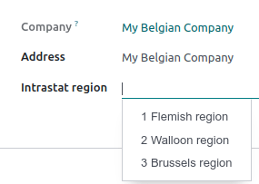

Intrastat¶
Intrastat es el sistema de recopilación de datos y elaboración de estadísticas sobre los bienes comercializados entre los Estados miembros de la UE. Recopila datos sobre:
Transacciones comerciales de bienes para su uso, consumo, inversión o reventa con traspaso de propiedad;
Movimientos de bienes sin traspaso de propiedad (por ejemplo, traslados de existencias o movimientos de bienes antes o después de la producción o tratamiento externos, y después del mantenimiento o reparación);
Devolución de bienes
Nota
Aunque se sigue utilizando el sistema Intrastat, el término Intrastat no se emplea en la última legislación, en su lugar se usa el término estadísticas del comercio de bienes dentro de la Unión.
Ver también
Explicación de las estadísticas de Eurostat - Glosario: Intrastat <https://ec.europa.eu/eurostat/statistics-explained/index.php?title=Glossary:Intrastat>`_
Configuración general¶
Active el reporte Intrastat en . Seleccione Intrastat en la sección Facturas de clientes y, por último, Guardar.
Códigos predeterminados de transacción: facturación y reembolsos¶
Puede establecer un código de transacción predeterminado para todas las transacciones de factura y reembolso. Para hacer esto, vaya a , seleccione un código de transacción de factura predeterminado o un código de transacción de reembolso predeterminado y luego haga clic en guardar. El código se establecerá de forma automática en todas las líneas de factura respectivas.
Código regional¶
El código regional solo se usa para las empresas belgas. Para usarlo, vaya a , seleccione la región intrastat de la empresa en la que se encuentra la empresa y haga clic en guardar.
Truco
Si tiene almacenes en más de una región, puede definir el código de región en cada almacén. Para ello, vaya a , seleccione un almacén, defina su región intrastat y haga clic en guardar.
Configuración de productos¶
Para que los productos se añadan correctamente a un reporte intrastat deben estar bien configurados.
Código de mercancía¶
Los códigos de mercancía son números de referencia reconocidos en todo el mundo que se usan para clasificar los bienes según sus características. El código intrastat usa la nomenclatura combinada.
Si desea añadir un código de mercancía, vaya a y seleccione un producto, luego, en la pestaña contabilidad, establezca el código de mercancía del producto.
Cantidad: peso y unidades suplementarias¶
De acuerdo con las características de la mercancía, a veces es necesario indicar el peso en kilos (sin contar el paquete) o las unidades suplementarias del producto, esto se debe indicar en metros cuadrados (m2), número de unidades (p/st), litros (l), o gramos (g).
Si desea añadir el peso de un producto o una unidad suplementaria, vaya a y seleccione un producto. Introduzca el peso o las unidades suplementarias del producto en la pestaña contabilidad.
País de origen¶
Si desea establecer el país de origen de un producto, vaya a y seleccione un producto. Establezca el país de origen en la pestaña contabilidad.
Configuración de las facturas¶
Una vez que haya configurado correctamente los productos, deberá definir varios valores en las facturas y recibos que cree.
Código de transacción¶
Los códigos de transacción sirven para identificar el tipo de transacción. Pude establecer códigos de transacción predeterminados para las transacciones de facturas y reembolsos.
Si desea establecer un código de transacción en una línea de factura debe crear una factura, hacer clic en el botón de selección de columnas, seleccionar intrastat, y usar esta nueva columna para seleccionar un código de transacción.

País del contacto¶
El país del contacto representa el país del proveedor y del cliente para las facturas. Se completa de forma automática según el país establecido en el campo País del contacto.
Si desea editar el país del contacto de forma manual debe crear una factura, hacer clic en la pestaña Más información y seleccionar el país intrastat.
Código de transporte¶
El código de transporte identifica el presunto modo de transporte a usar para transportar los bienes (llegada o expedición).
Si desea añadir el código de transporte debe crear una factura, hacer clic en la pestaña Más información y seleccionar el modo de transporte intrastat.
Valor de los bienes¶
El valor de un bien es el subtotal (precio multiplicado por la cantidad) de una línea de factura.
Configuración de contacto¶
Intrastat utiliza dos campos del formulario de contacto: NIF y país. Puede establecer el país en la factura de forma manual.
Generar el reporte intrastat¶
Para generar el reporte, vaya a . Se calcula de forma automática según la configuración predeterminada y la información que se encuentra en los productos, facturas, y contactos.
Exporte el reporte en formato PDF, XLSX o XML y envíelo a su administración legal.
Cada línea del reporte corresponde a una sola línea de la factura y contiene la siguiente información:
Número de referencia de la factura;
Sistema, consiste en un código generado automáticamente para indicar si el documento es una factura (expedición) o un recibo (llegada);
País; el país del proveedor para las llegadas y el país del cliente para los envíos;
Si su empresa está ubicada en Bélgica, código regional;
Peso;
Valor, expresado siempre en euros, aunque en la factura original se haya utilizado otra divisa.